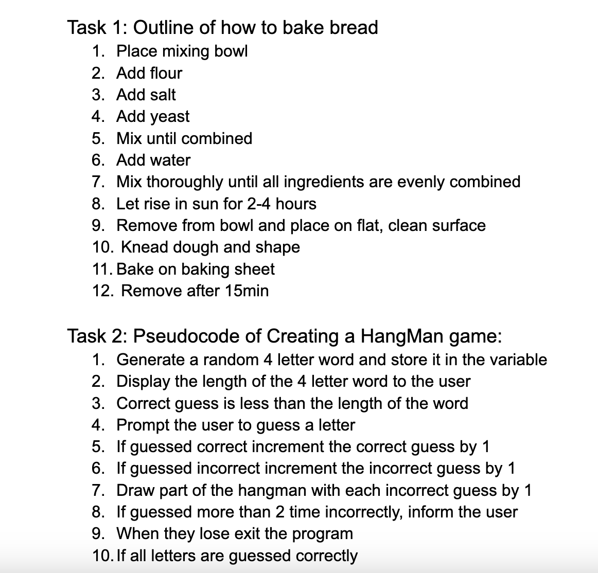
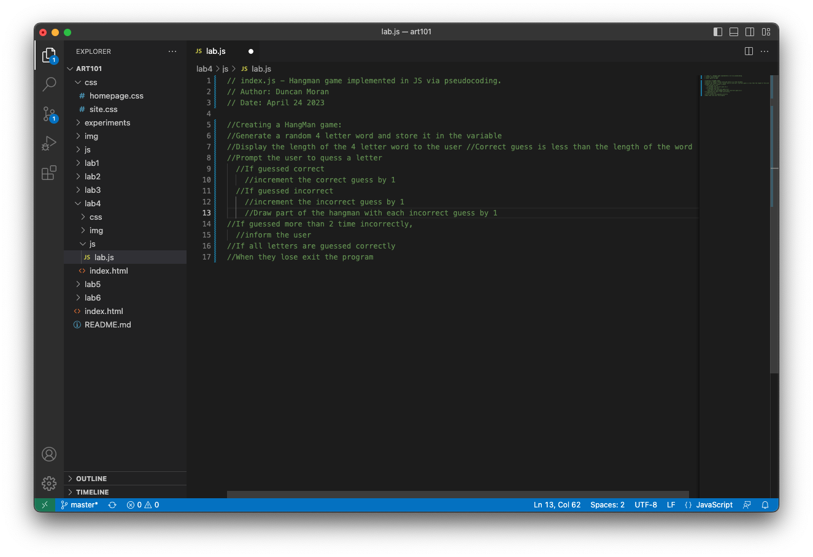

Lab 4: Pseudocoding and Problem-Solving
Challenge
The challenge or goal of this lab was to get in the habit of drafting pseudocodes before beginning coding, essentially creating an outline or skeleton of what we want to code.
Problems
My partner and I struggled primarily with finding a game that would be simple enough to pseudocode. We settled on hangman as my partner found a really helpful, similarly pseudocoded version on github.
Results
Results of the lab can be found below, with captioned screenshots, pseudocode, and lists.
Here are our initial lists, the first being a pseudocode of how one could make bread, and the second being the pseudocode of hangman before it was implemented in JavaScript:
Here is our psuedocode of Hangman:
//Creating a HangMan game:
//Generate a random 4 letter word and store it in the variable
//Display the length of the 4 letter word to the user //Correct guess is less than the length of the word
//Prompt the user to quess a letter
//If guessed correct
//increment the correct guess by 1
//If guessed incorrect
//increment the incorrect guess by 1
//Draw part of the hangman with each incorrect guess by 1
//If guessed more than 2 time incorrectly,
//inform the user
//If all letters are guessed correctly
//When they lose exit the program
Here is that same Hangman Pseudocode, but in JavaScript on VisualStudio:
